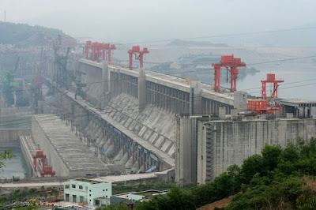
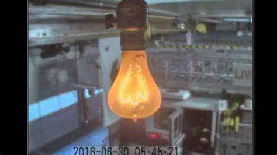
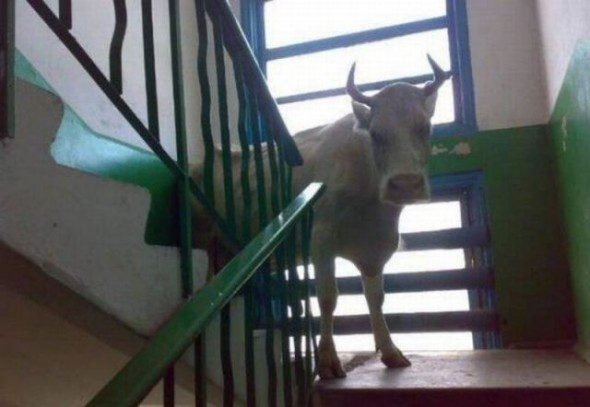
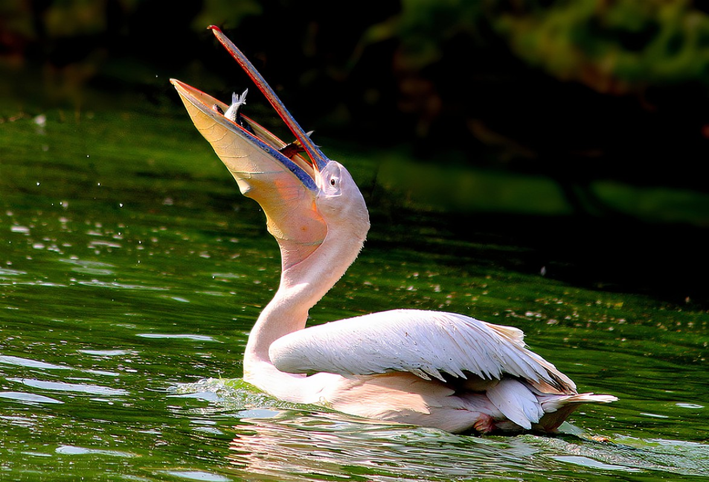

Top 5 informações foda
1 – O monte Everest cresce 4 milímetros por ano.
2 – A barragem da maior usina hidrelétrica do mundo, a Usina das Três Gargantas, localizada na China, prolongaria a duração do dia em 0,66 microssegundos. Isso, aliás, seria possível se ela operasse em sua capacidade máxima, devido à enorme massa de água que ela comporta.

3 – Existe uma lâmpada que está ligada há mais de 113 anos na cidade de Livermore, na Califórnia.

4 – Vacas não conseguem descer escadas.

5 - Aves não poderiam ser enviadas ao espaço, pois elas necessitam da força da gravidade para engolir.
